Chapter 50 Flows on the plane
Let’s return the rabbit/fox system as an example of flow. Since there are two state quantities, \(r\) and \(f\), the state space \((r, f)\) is a plane. At each point in the state space, the flow vector gives the direction and speed of motion. Like all vectors, a flow vector has only two properties: the direction and length. The speed of motion is the length of the flow vector.
The flow itself is a vector field. This is an assignment of a vector to each point of the state space. Graphically, we depict a flow field by selecting a grid of points in the state space, finding the flow vector for each grid point, and drawing those vectors positioned at their respective grid points.
Figure 50.1: The flow field has a vector at each point in state space but we can draw only a few if the plot is to be legible. Zooming in on a region produces more detail.
Recall from Block 5 that it’s conventional to specify a vector by giving a coordinate pair for the tip of the vector with the understanding that the tail is at the origin. For the rabbit/fox system, the tip’s coordinate is \(\left({\Large\strut} g_r(r, f),\ g_f(r, f)\right)\). This notation is potentially confusing, because the letters \(r\) and \(f\) appear in so many places. Each each vector in Figure ?? is drawn at a particular point, say \((r=0.96, f=0.48)\). At that point, evaluate the dynamical functions: \(g_r(r=0.96, f=0.48) = 0.0207\) and \(g_r(r=0.96, f=0.48)= 0.941\).
A fixed point of the dynamics is a point in the state space where the dynamical functions both evaluate to zero. It’s convenient to mark fixed points as the intersection of zero contours of the dynamical functions. Figure 50.2 shows these zero contours (red for rabbits, blue for foxes) laid on top of the flow field. Such zero contours of dynamical functions are called nullclines. (The word means “zero slope”. “Null” corresponds to zero and “cline” is the root of words like “incline” or “decline.”)
Figure 50.2: Flow field and nullclines for the rabbit/fox dynamics.
Due to the nature of fixed points, if the initial condition is at the intersection of the nullclines the state will not change. But is the fixed point stable or unstable.
As you will see, in two and higher dimensional dynamical systems, there is more than one kind of stability and more than one kind of instability. These different kinds of stability and instability have a direct correspondence to different kinds of behavior in real-world systems.
Very near the fixed point, dynamics are approximately linear. We’ll return to a quantitative analysis of this in Chapter 52. Our objective here is to show that there are several generic types of behavior and that the stability of dynamics near the fixed point has to be one of a handful of different types.
50.1 Generic behaviors
On a nullcline of a dynamical variable \(x\), the \(x\)-component of the flow must be zero. The flow will point to positive \(x\) on one side of the nullcline and negative \(x\) on the other. This is really nothing more than saying that on one side of a zero contour the function value is positive and on the other side negative. We’ll indicate this on the following diagrams by shading the positive side of the nullcline with the same color as the nullcline itself. Figure 50.3 shows the nullclines of a linear system on separate plots. Notice that flow in the shaded side of the \(x\) (red) nullcline the flow always has a positive component to the right. Similarly, in the shaded side of the \(y\) (blue) nullcline, the flow always has a positive component to the right.
Figure 50.3: The nullclines of a linear dynamical system near the fixed point. \(x\) nullcline is red, \(y\) nullcline is blue
Placing both nullclines on the same plot divides the region near the fixed point into four parts. This is generic behavior. Unless the two nullclines are exactly the same as each other, the two nullclines split the region into four quadrants.
Figure 50.4: Four quadrants of linear dynamics near the fixed point.
We can identify the quadrants by their color—white, red, blue, purple. In each quadrant, the “compass direction” of all flow vectors point to one quadrant of the compass: white to the south-west, red to the south-east, blue to the north-west, and purple to the north-east.
This particular linear flow is unstable. Notice that any initial condition in the purple quadrant will lead to a NE trajectory, away from the fixed point. Similarly, any initial condition in the white quadrant leads to a SW trajectory, again away from the fixed point. For an initial condition in the red or blue quadrants, the flow will take the trajectory into either the white or purple quandrants. The initial part of the trajectory may be towards the fixed point, but as soon as the trajectory crosses into white or purple territory, the trajectory leads away from the fixed point. So, the overall flow is unstable. This particular type of instability, where the initial path might be toward the fixed point but eventually leads away from it, is called a saddle. The flow is analogous to the movement of a marble placed on a horse saddle; it might start to roll toward the center of the saddle, but eventually it will roll off to the side.
All linear flows will lead to this quadrant structure. Another feature of the structure is that the white quadrant must always be opposite to the purple, and the red opposite to the blue. This allows us to enumerate the different possible types of stability.
A very compact summary of the dynamics shows just the four compass directions and the relative positions of the quadrants. For instance, \[\begin{array}{c|c} \color{red}{\searrow} & \color{purple}{\nearrow}\\\hline \color{gray}{\swarrow} & \color{blue}{\nwarrow} \end{array}\ ,\] corresponds to the saddle flow seen in the previous flow field.
There are, altogether, eight possible configurations:
$$ \[\begin{array}{cccc} \text{saddle} & \text{saddle} & \text{saddle} & \text{saddle} \\ \begin{array}{c|c} \color{red}{\searrow} & \color{purple}{\nearrow}\\\hline \color{gray}{\swarrow} & \color{blue}{\nwarrow} \end{array} & \begin{array}{c|c} \color{gray}{\swarrow} & \color{red}{\searrow} \\\hline \color{blue}{\nwarrow} & \color{purple}{\nearrow} \end{array} & \begin{array}{c|c} \color{blue}{\nwarrow} & \color{gray}{\swarrow} \\\hline \color{purple}{\nearrow} & \color{red}{\searrow} \end{array} & \begin{array}{c|c} \color{purple}{\nearrow}& \color{blue}{\nwarrow}\\\hline \color{red}{\searrow} & \color{gray}{\swarrow} \end{array} \\ \ \\ \begin{array}{c|c} \color{red}{\searrow} & \color{gray}{\swarrow}\\\hline \color{purple}{\nearrow} & \color{blue}{\nwarrow} \end{array} & \begin{array}{c|c} \color{purple}{\nearrow}& \color{red}{\searrow} \\\hline \color{blue}{\nwarrow}& \color{gray}{\swarrow} \end{array} & \begin{array}{c|c} \color{blue}{\nwarrow}& \color{purple}{\nearrow} \\\hline \color{gray}{\swarrow}& \color{red}{\searrow} \end{array}& \begin{array}{c|c} \color{gray}{\swarrow}& \color{blue}{\nwarrow} \\\hline \color{red}{\searrow}& \color{purple}{\nearrow} \end{array}\\ \text{center} & \text{orbit} & \text{source} & \text{orbit} \end{array}\]$$
Saddles are unstable, although the trajectory might approach the fixed point at first. A source is unstable; any trajectory heads away from the fixed point. A center is stable; any trajectory heads toward the fixed point.
As for the orbits, one in a clockwise direction and the other counter-clockwise, we can’t yet say from this simple theory whether they are stable or unstable. The orbit we have already met, the rabbit-fox dynamics, has counter-clockwise trajectories that form closed loops. This is called neutral stability.
Figure 50.5: The rabbit/fox system has orbits that are neutrally stable.
50.2 Linearization
For dynamical systems with two state variables, constructing a linear approximation to dynamics near a fixed point follows a similar procedure to that with one-state-variable systems.
- Locate the fixed point.
- Construct the first-order polynomial approximation to each of the dynamical functions at the fixed point.
For instance, the pendulum system has state variables \(\theta\) and \(v\) with dynamics \[\partial_t \theta = g_\theta(\theta, v) = v\\ \partial_t v = g_{v}(\theta, v) = - \sin(\theta) \] There is a fixed point at \(\theta = 0\), \(v=0\): this is just the situation of a pendulum hanging down that has no motion.
The dynamical function \(g_\theta(\theta, v) = v\) is already in first-order polynomial form.
The other dynamical function, \(g_v(\theta, v) = - \sin(\theta)\) is nonlinear. The first order polynomial approximation centered on the fixed point will be \[g_v(\theta, v) \approx \underbrace{\color{magenta}{g_{v}(0, 0)}}_0 + \underbrace{\color{magenta}{\partial_\theta g_v(0, 0)}}_{-\cos(0)}\ \theta + \underbrace{\color{magenta}{\partial_v g_v(0, 0)}}_0\, v\] The term \(g_v(0, 0) = 0\) because we are evaluating \(g_v()\) at a fixed point. The term \(\partial_v g_v(0, 0) = 0\) because \(g_v()\) does not depend on \(v\).
We’ll use \(u\) and \(w\) as the dynamical variables in the linear approximation in order to avoid confusion with the original, nonlinear equations. The linearized dynamics are therefore: \[\partial_t u = \ \ w\\ \partial_t w = - u\]
Figure 50.6: Flow field, nullclines, and trajectories of the pendulum (black) and the linearized pendulum ($) from three different initial conditions.
50.3 Exercises
- D-OFZHG: Draw the nullclines of two dynamical functions on the phase plane using software.
- X-HGCV2: Find fixed points of a 2nd-order dynamical function by finding the intersection point(s) of the nullclines.
- N-CB2LE: Linearize a dynamical function of two state variables at a fixed point by constructing a first-order polynomial approximation in two variables.
- N-SCL6M: From a graph of a flow field near a fixed point, identify the qualitative stability of the fixed point as a source, center, saddle, or spiral.
Exercise 50.05:  ePqij6 N-SCL6M
ePqij6 N-SCL6M
Describe the stability of each of the following flows.
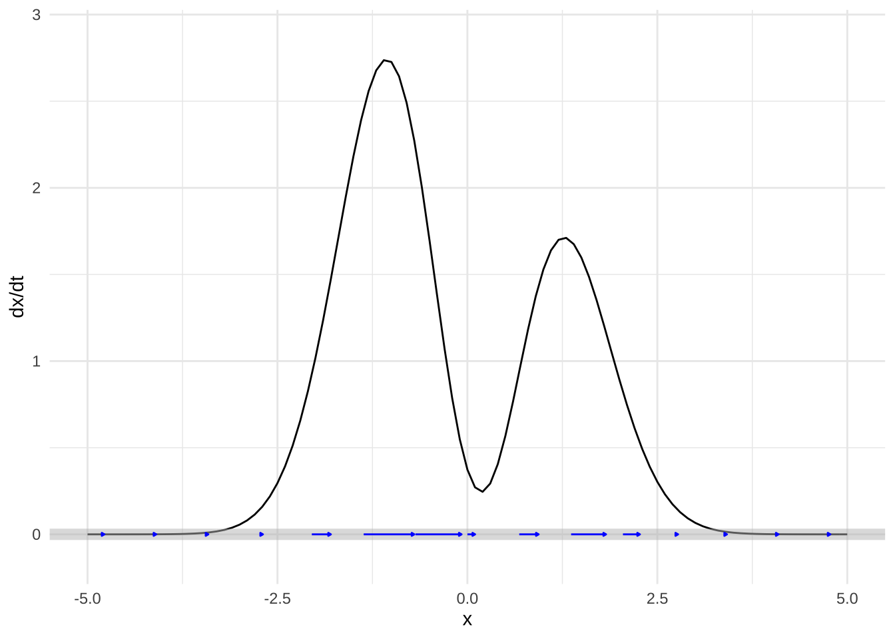
Exercise 50.07: 3A3pMv N-SCL6M
Consider this two-dimensional flow field:

There are three fixed points visible. The next plots zoom in on each of the fixed points.

Question A Is the fixed point in (A) stable or not?
Stable︎✘ Unstable\(\heartsuit\ \)

Question B Is the fixed point in (B) stable or not?
Stable︎✘ Unstable\(\heartsuit\ \)
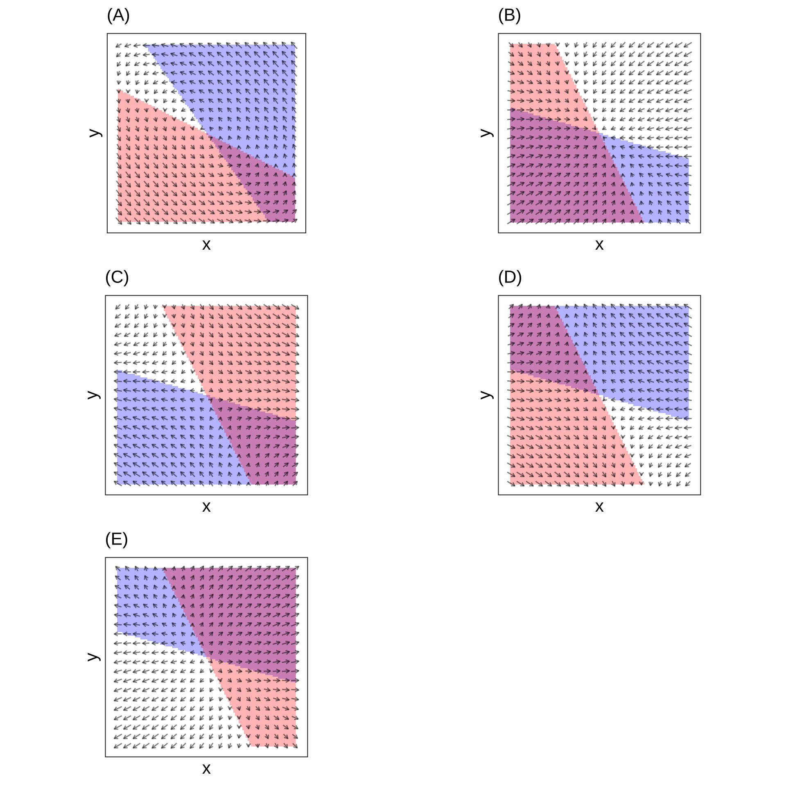
Question C The fixed point in (C) is called a “saddle.” It is stable in one direction and unstable in another. Which of these is correct?
- Stable in y-direction and unstable in the x-direction︎✘
- Stable in the x-direction and unstble in yRight!
Here’s a system which has 4 fixed points in the region shown.
 Plots (D) and (E) zoom in on two regions.
Plots (D) and (E) zoom in on two regions.
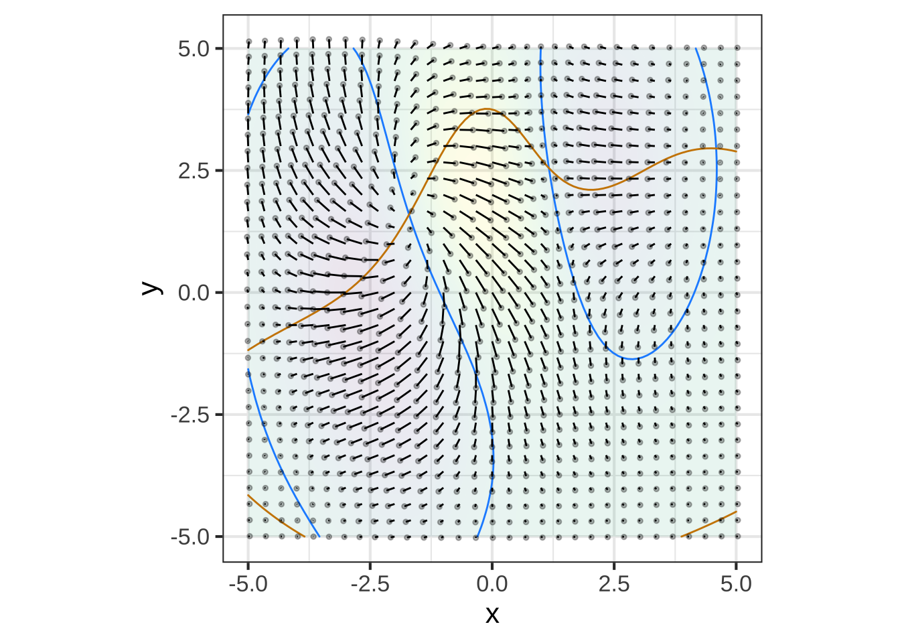
Question D Which of the following is the best description of the behavior near the fixed point in (D)?
- Stable and rotating clockwise︎✘
- Stable and rotating counter-clockwiseNice!
- Unstable and rotating clockwise︎✘
- Unstable and rotating counter-clockwise︎✘
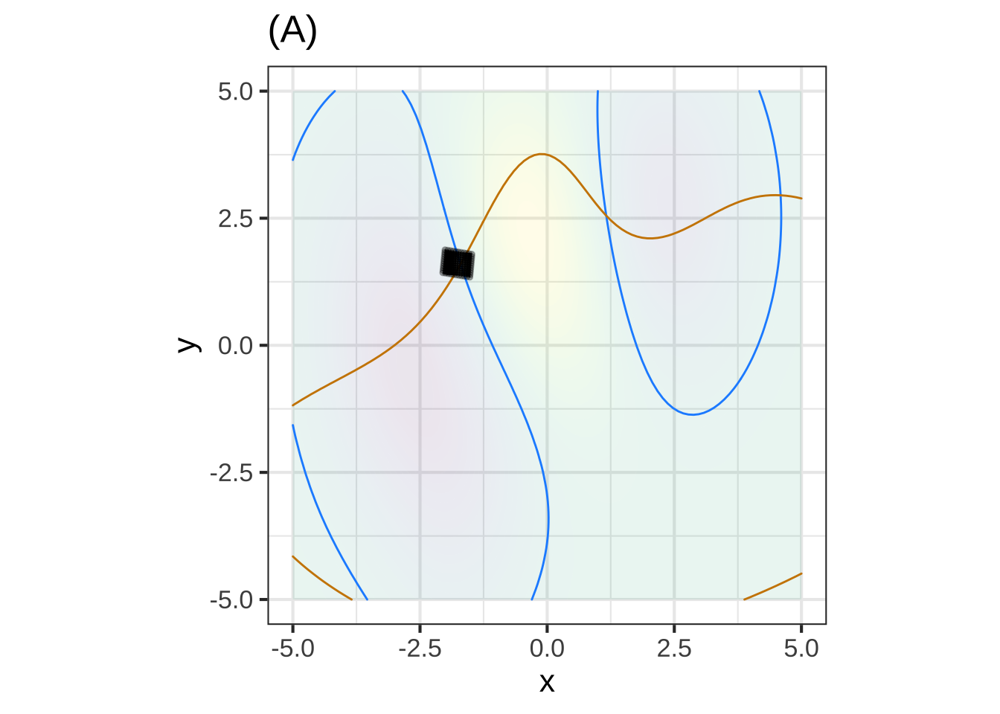
Question E Which of the following is the best description of the behavior near the upper left fixed point in (E)? (Neutal stability means neither stable nor unstable; the trajectory just orbits around the fixed point.)
- Unstable and rotating clockwise︎✘
- Stable and rotating counter-clockwise︎✘
- “Neutral stability” and rotating clockwiseNice!
- “Neutral stability” and rotating counter-clockwise︎✘
Let’s look a little more closely at the upper-left fixed point in graph (E):
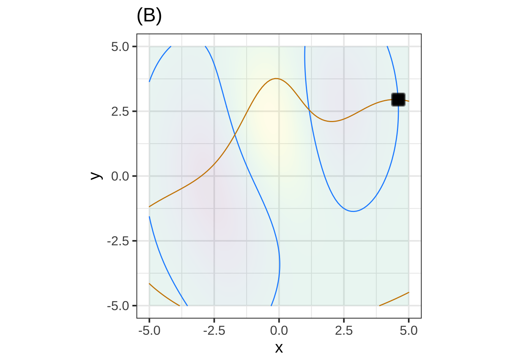
The pattern in figure (F) is clockwise rotation around the fixed point. This kind of pattern is of fundamental importance in physics and engineering.
Exercise 50.09: KzgT1c X-HGCV2
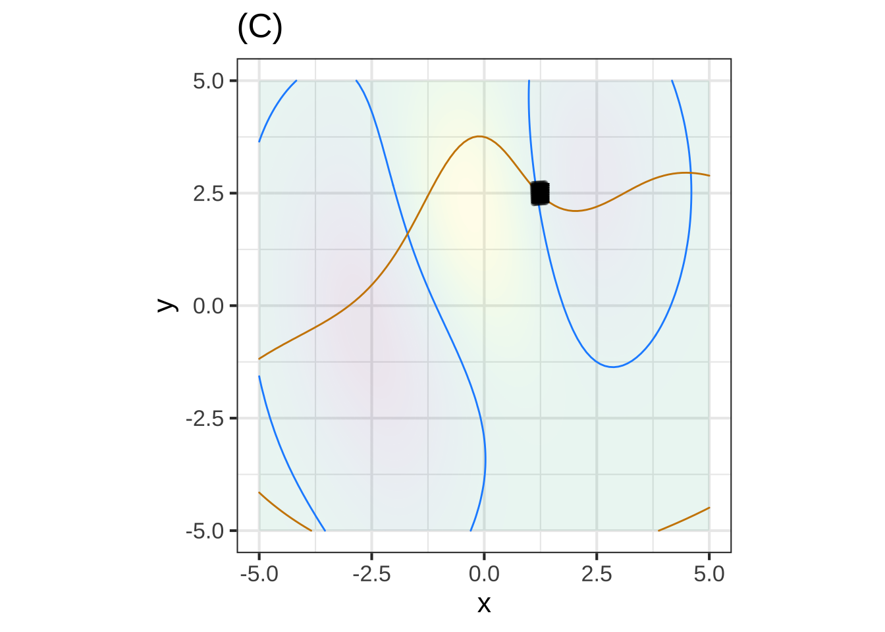 Question A In plot (A), how many fixed points are visible?
0\(\heartsuit\ \) 1︎✘ 2︎✘ 3︎✘ 4︎✘ 5︎✘
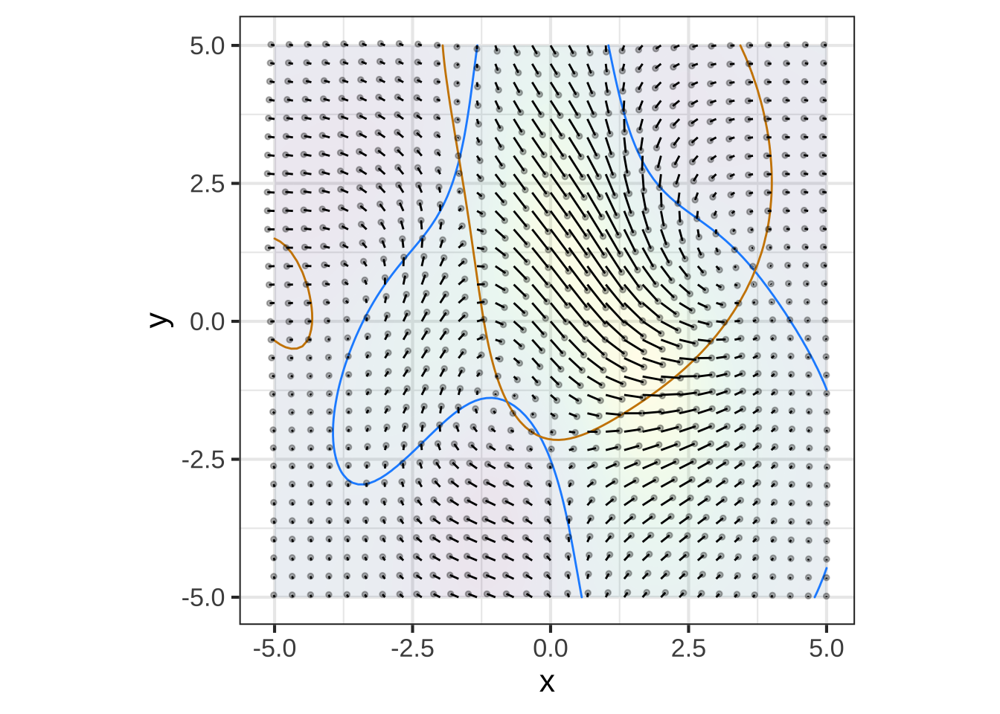
Question B In plot (B), how many fixed points are visible?
0︎✘ 1︎✘ 2︎✘ 3︎✘ 4\(\heartsuit\ \) 5︎✘

Question C In plot (C), how many fixed points are visible?
0︎✘ 1︎✘ 2︎✘ 3\(\heartsuit\ \) 4︎✘ 5︎✘
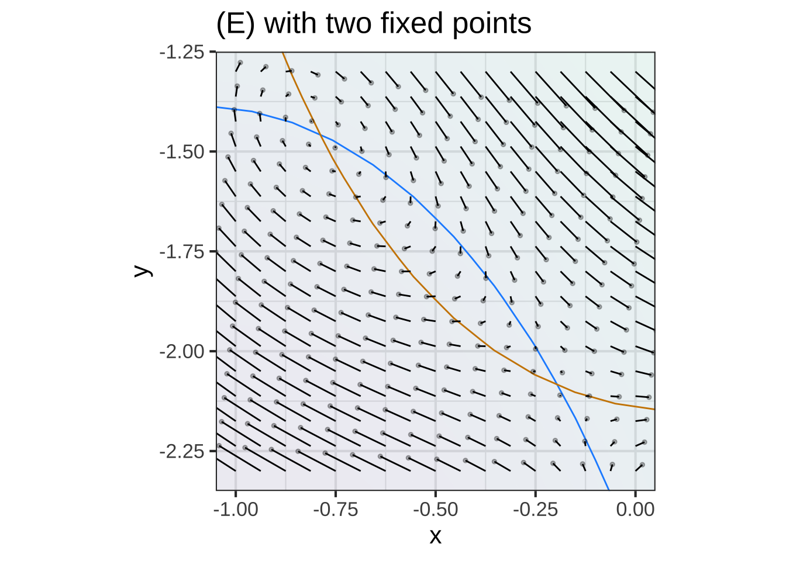
Question D In plot (D), how many fixed points are visible?
0︎✘ 1︎✘ 2︎✘ 3\(\heartsuit\ \) 4︎✘ 5︎✘
Exercise 50.11: owE1WY X-HGCV2
In each of the following graphs, a flow field is annotated with a red contour and a blue contour. Your task is to determine whether a contour corresponds to a zero of the horizontal component of flow, a zero of the vertical component of flow, or neither. (Remember, if the contour is at a zero of the horizontal flow, the flow on the contour will be entirely vertical. And vice versa.)
## Warning in validate_domain(domain, free_args): Using -5 to 5 in domain for
## missing domain names.## Warning in validate_domain(domain, free_args): Missing domain names: u, v## Warning: Ignoring unknown parameters: inherit## Scale for 'colour' is already present. Adding another scale for 'colour',
## which will replace the existing scale.## Scale for 'fill' is already present. Adding another scale for 'fill', which
## will replace the existing scale.## Warning: Removed 76 rows containing missing values (geom_segment).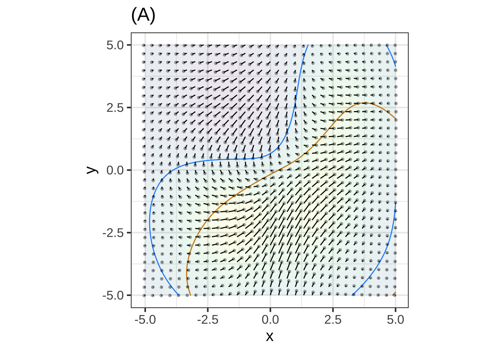 1. Plot A \(\color{blue}{\text{blue contour}}\):
i. Zero of horizontal flow
ii. Zero of vertical flow
iii. Neither <!-- Correct -->Plot A \(\color{red}{\text{red contour}}\):
- Zero of horizontal flow
- Zero of vertical flow
- Neither
## Warning in validate_domain(domain, free_args): Using -5 to 5 in domain for
## missing domain names.## Warning in validate_domain(domain, free_args): Missing domain names: u, v## Warning: Ignoring unknown parameters: inherit## Scale for 'colour' is already present. Adding another scale for 'colour',
## which will replace the existing scale.## Scale for 'fill' is already present. Adding another scale for 'fill', which
## will replace the existing scale.## Warning: Removed 76 rows containing missing values (geom_segment).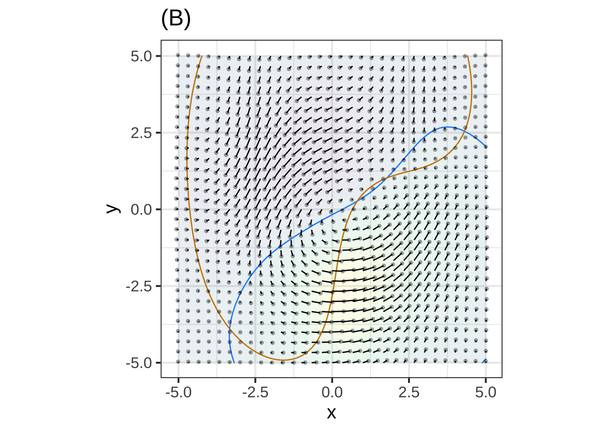
Plot B \(\color{blue}{\text{blue contour}}\):
- Zero of horizontal flow
- Zero of vertical flow
- Neither
Plot B \(\color{red}{\text{red contour}}\):
- Zero of horizontal flow
- Zero of vertical flow
- Neither
Exercise 50.13: 3Ug3IH N-CB2LE
The rabbit-fox system is nonlinear: \[\partial_t r = \alpha r - \beta r f\\ \partial_t f = - \delta f + \gamma rf\]
Write down, in English, the names of the Greek letters in the above formula.
Using algebra, find the fixed point \((r^\star, f^\star)\) of the rabbit-fox system.
- Linearize the rabbit-fox system around the fixed point and write down the linearized dynamics in this form:
\[\partial_t r = A [r - r^\star] + B [f - f^\star]\\ \partial_t f = C [r - r^\star] + D[f - f^\star]\] Your should give the values of \(A, B, C, D\) in terms of the Greek letters of the nonlinear system.
\[\partial_t r = \left(\alpha + \frac{\beta\gamma}{\delta}\right) [r - r^\star] + \alpha [f - f^\star]\\ \partial_t f = - \delta [r - r^\star] + \left(\delta + \frac{\alpha\beta}{\delta}\right) [f - f^\star]\]
Exercise 50.15: s5x504 N-CB2LE
Figure 50.6 shows a flow field of the pendulum system and three pairs of trajectories, one pair for each of three initial conditions. Each trajectory starts at \(t=0\) and ends at \(t=6\).
A. Read the three different initial conditions from the graph.
B. The dark gray trajectories are for the original (nonlinear) pendulum system while the \(\color{magenta}{\text{magenta}}\) trajectories are for the linearized dynamics. Describe in words the differences in the trajectories for the nonlinear and the linearized dynamics.
C. The flow field corresponds to either the nonlinear (gray) or linearized (\(\color{magenta}{\text{magenta}}\)) dynamics. Which one is it?
Exercise 50.17: iRZfBY
In this exercise, you’ll work with a particular function f() of two variables. Construct the function this way:
f <- rfun( ~ x + y, seed=103)The goal of this exercise is to explore the connections between the optimization method of gradient ascent or descent and dynamical systems.
Here’s a plot of the function and its gradient field.
contour_plot(f(x, y) ~ x + y, domain(x=c(-4, 4), y=c(-4, 4))) %>%
gradient_plot(f(x, y) ~ x + y) 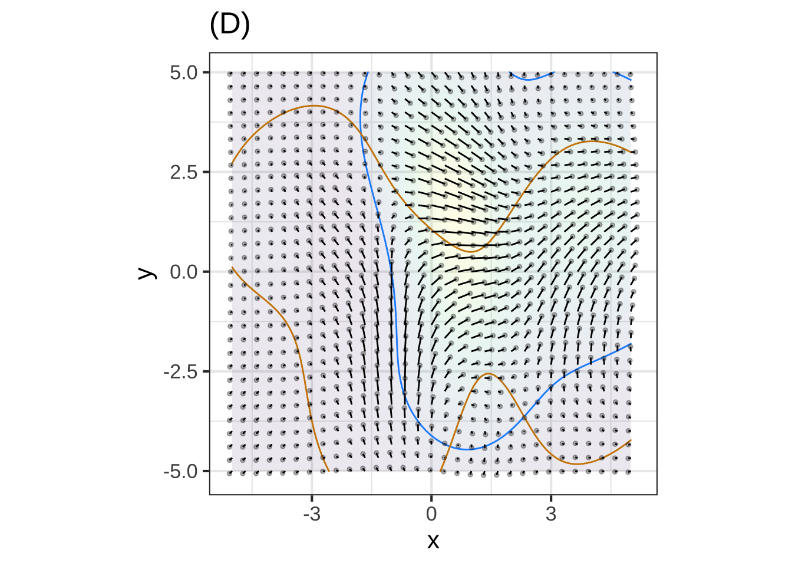
You can construct the \(x\) and \(y\) components of the gradient \(\partial_x f(x,y)\) and \(\partial_y f(x,y)\) of f() this way:
dx_f <- D(f(x, y) ~ x)
dy_f <- D(f(x, y) ~ y)Use these two functions to define a dynamical system: \[ \partial_t x = \partial_x f(x,y)\\ \partial_t y = \partial_y f(x,y)\]
Use
integrateODE()to integrate the equations numerically from the initial condition \((x=0, y=-3)\). Plot the resulting trajectory as a layer on top of the contour plot and gradient field. Make thetdur=parameter inintegrateODE()large enough to get very close to the high-point in the contour plot.Modify the differential equations so that they correspond to gradient descent rather than ascent. Using the initial condition \((x=-1, y=1)\), numerically integrate the differential equations and, as in (1), plot the trajectory as a layer on the contour-plot/gradient-field. Make the
tdur=parameter large enough to get very close to a local minimum of \(f()\).From (2), change the initial condition to \((x=-1.25, y=1)\) and plot the trajectory. What’s different from the result in (2).
soln1 <- integrateODE(dx ~ dx_f(x=x, y=y),
dy ~ dy_f(x=x, y=y),
x = 0, y = -3,
tdur = 10)
soln2 <- integrateODE(dx ~ -dx_f(x=x, y=y),
dy ~ -dy_f(x=x, y=y),
x = -1., y = 1,
tdur = list(from=0, to=10, dt=0.1))
soln3 <- integrateODE(dx ~ -dx_f(x=x, y=y),
dy ~ -dy_f(x=x, y=y),
x = -1.25, y = 1,
tdur = list(from=0, to=10, dt=0.1))
Common <- contour_plot(f(x, y) ~ x + y, domain(x=c(-4, 4), y=c(-4, 4))) %>%
gradient_plot(f(x, y) ~ x + y)
Common %>% traj_plot(y(t) ~ x(t), soln1, color="dodgerblue") %>%
gf_labs(title="Plot 1")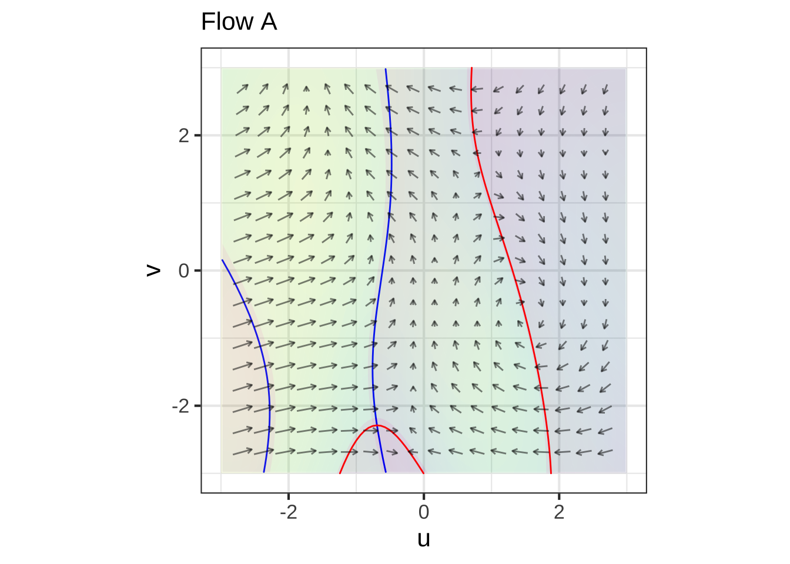
Common %>%
traj_plot(y(t) ~ x(t), soln2, color="orange3") %>%
traj_plot(y(t) ~ x(t), soln3, color="magenta") %>%
gf_labs(title="Plot 2")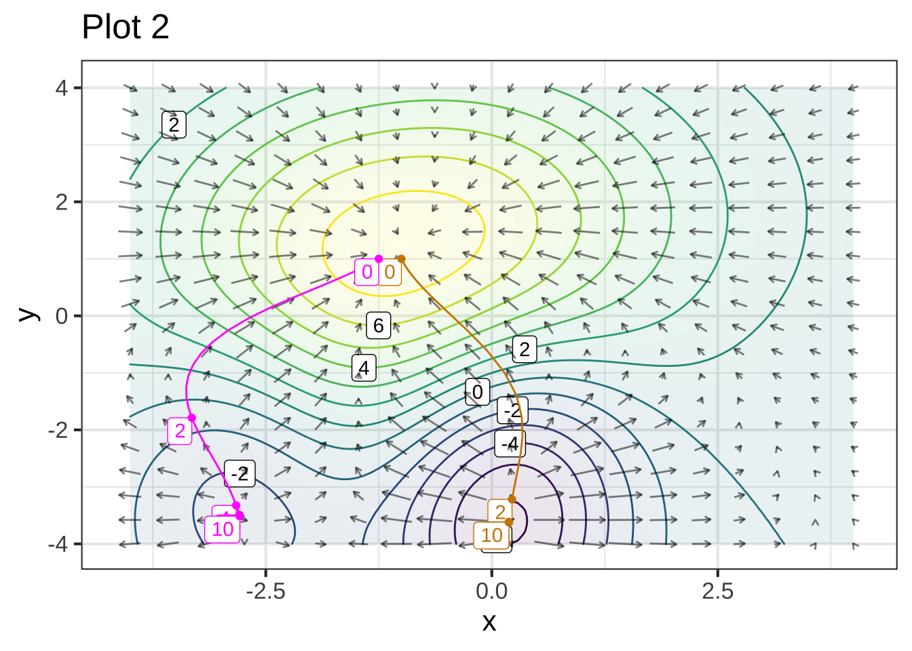